14. Quantum3D Logo¶
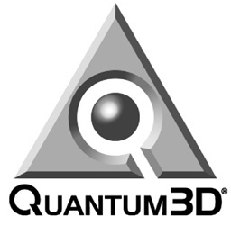We open a new document with Inkscape.
We copied the logo above in Inkscape to serve as a model.
We draw a red triangle with transparency at 50 while holding down the Control key so that the base is horizontal.
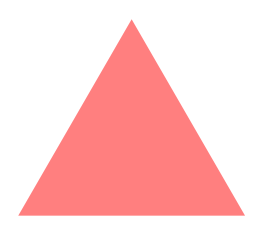We draw a green circle with transparency at 50 and place it in the center of the triangle by activating 'Adjust nodes' in the vertical toolbar on the right.
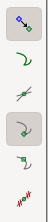 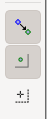
We can adjust the size of the circle with the outer handles while pressing Control + Shift so that the circle does not move from the center of the figure.
We continue creating a blue rectangle with transparency 50 that comes out of the green circle.
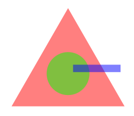We select the circle and then the rectangle and with the alignment tools, we vertically center the rectangle with the circle.

Now we must activate 'Adjust the center of rotation of an element'
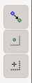And double click on the selected circle and rectangle so that the rotation handles and the rotation center cross appear.
We must move the cross to the center of the circle, which will be the center of rotation.
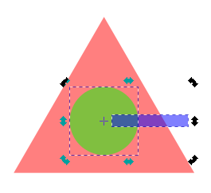With the
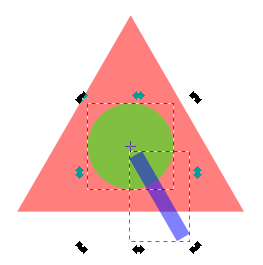Object... Transform...menu tool we rotate both figures to the right by 60 degrees. We could also rotate the set with the shooters, although we would not achieve as much precision.We unite the circle and the rectangle with the menu option
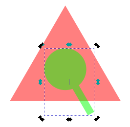Path... UnionWe select all the objects and subtract one from the other with the menu option
Path... Difference
To continue, we will duplicate the newly created object and make it smaller by selecting the
Path... Reducemenu option several times.
This option will make the object smaller, reducing the edges perpendicular to the sides of the drawing.
Now we must duplicate the new object created (the small triangle) and subtract from the lower large triangle
Path...Difference. To select both, remember to click on them while holding down the Shift key.The result of the difference will be an inner triangle and an outer triangle that coincide in their margins.
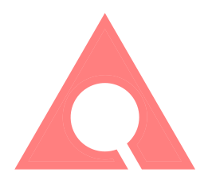Separating both triangles, the two figures can be better observed.
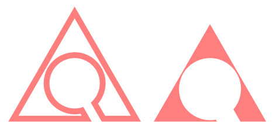To continue, we must divide the outer margin (the larger triangle) into parts that will later have a different color. To achieve this we are going to use the tool to draw lines and curves
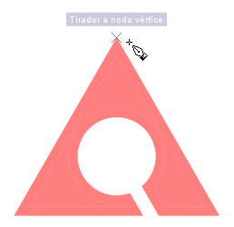 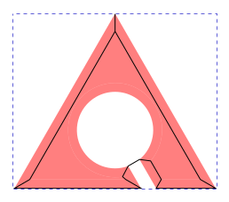 along with options for adjusting nodes and paths.
along with options for adjusting nodes and paths.The route is already drawn dividing all the outer sections and ending at the starting point. Now we select the path and the outer triangle and apply the
Path... Dividemenu toolIf we find it difficult to select the two objects, we can temporarily remove the inner triangle or select the objects from the object window that opens in the
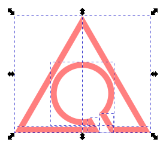Object... Objects...menu.The different edges can be separated from each other.
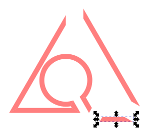To join them again, just press the Control + Z key or in the menu select
Edit... Undo.We can now join the two triangles thanks to the fact that the nodes will join automatically when one figure is brought closer to the other.

At this point, we will select the appropriate color for each piece taking as a model the initial logo that we have copied, with the 'Select colors from the image' tool found in the
Object... Fill and bordermenu window.
We need to color the central circular border with a gradient starting with a dark color at the top left and ending with a lighter color at the bottom right.
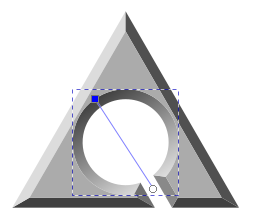It only remains to finish, create a circle and place it in the center of the triangles.
We will color the circle with a radial gradient that has white in the center and dark gray at the end.

We deselect the sphere and we already have the finished logo.
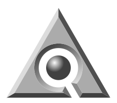